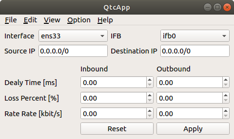

画面構成
ここではQtcAppの画面構成や操作方法について解説します。
メインウィンドウ
QtcAppを起動すると表示される「メインウィンドウ」の構成は以下のようになっています。

メインウィンドウの位置やサイズの変更、最小化、最大化といった基本操作は、OSのウィンドウシステムの流儀に従って操作できるようになっています。
メインメニュー
メインメニューからは各種操作や設定にメニュー形式でアクセスできます。メニュー項目は、「File」、「Edit」、「View」、「Option」、「Help」といったカテゴリごとにまとめられています。